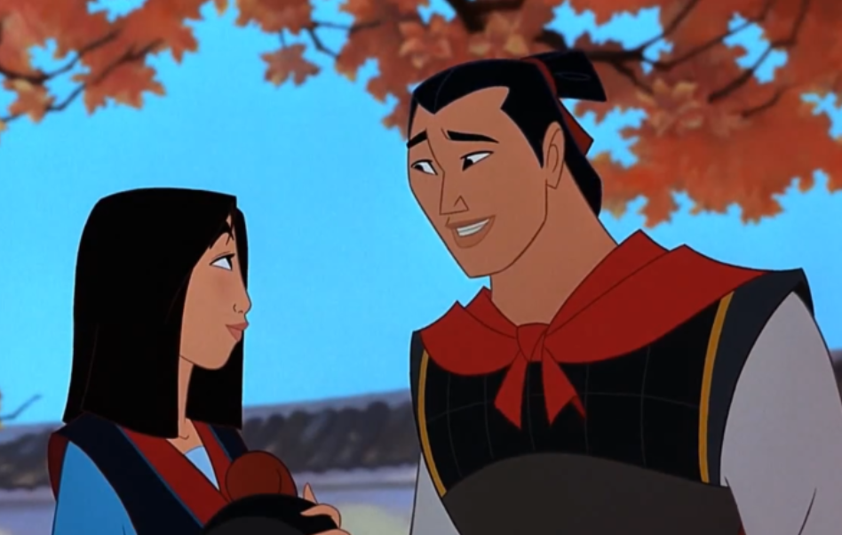

역할 배분
김소연
애니메이션 <뮬란> 소개, 선택 이유 / 목차 생성, 정리 페이지 만들기 뮬란의 활용 방안 : 관객 참여형 연극, 웹툰, 현대 무용
송예진
<뮬란>과 '홍계월전'의 비교 분석 / 뮬란의 활용 방안 : 드라마, VR
이다은
'화목란 서사시' 분석, <뮬란>의 원전 고전적 요소 분석 뮬란의 활용 방안 : 웹소설
최예원
<뮬란>의 여성영웅소설적 분석 / 뮬란의 활용 방안 : 홀로그램
참고 문헌

1. 곽무천, 강필임 역.
『악부시집』
, 지식을 만드는 지식, 2011. 2. 박송희,
「한·중 여성영웅소설 속 전통적 결혼관 비교 연구」
, 『동아시아고대학』, 제40집, 동아시아고대학회 3. 장용화,
“화목란”
, 네이버 지식백과, 2021.10.8. 접속. 4. 토니 밴크로프트, 베리 쿡.
≪뮬란≫
, 월트 디즈니 애니메이션 스튜디오, 1998 5.
©Disney
@네이버 영화 6. 한국민족문화대백과, 네이버 지식백과
“홍계월전”
7.
©KBS